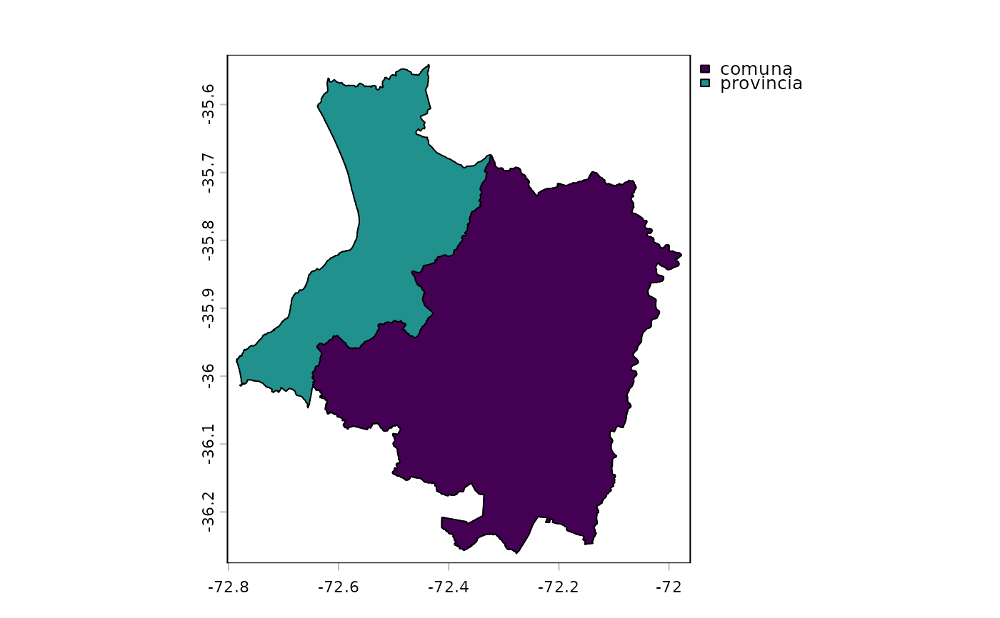

Returns the official DPA 2023 boundary of the Cauquenes commune or
province (Maule Region, Chile) from the cauquenes dataset, unpacked as a
SpatVector and optionally projected.
Arguments
- level
Administrative level:
"comuna"(commune 07201) or"provincia"(province 072). The English names"commune"and"province"are also accepted. Several levels can be requested at once.- crs
Optional coordinate reference system to project to, for example
"EPSG:4326".NULL(default) keeps SIRGAS-Chile 2002 (EPSG:5360).
Value
A SpatVector of polygons with the attributes described in
cauquenes, in the order of level.
Examples
comuna <- cauquenes_boundary("comuna")
expanse(comuna, unit = "km")
#> [1] 2124.542
provincia <- cauquenes_boundary("provincia", crs = "EPSG:4326")
ext(provincia)
#> SpatExtent : -72.785729999999944, -71.977499965999982, -36.261059093999961, -35.541172214999968 (xmin, xmax, ymin, ymax)
plot(cauquenes_boundary(c("provincia", "comuna")), "nivel")
